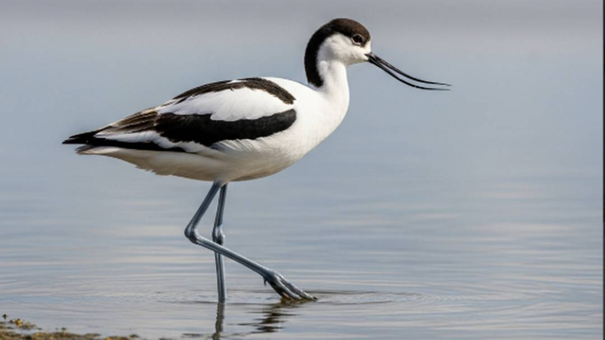
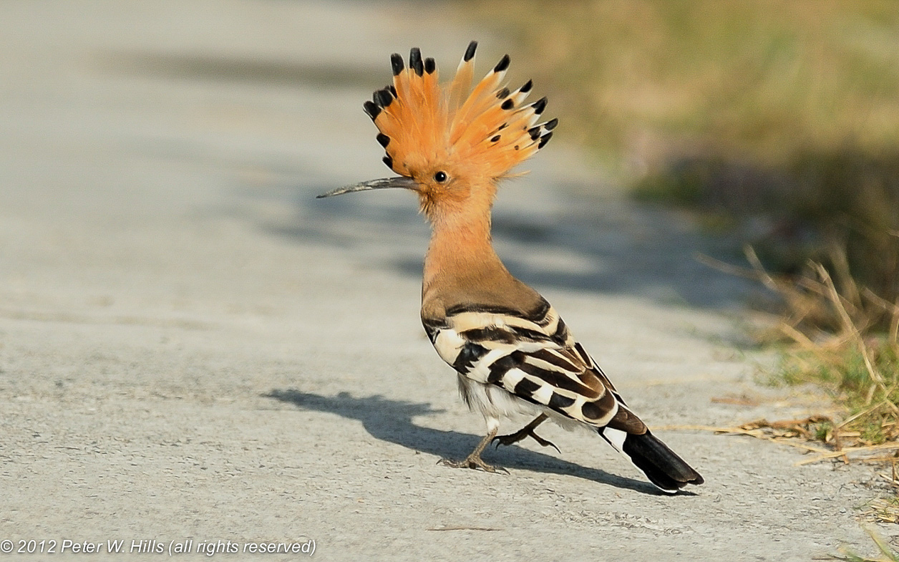
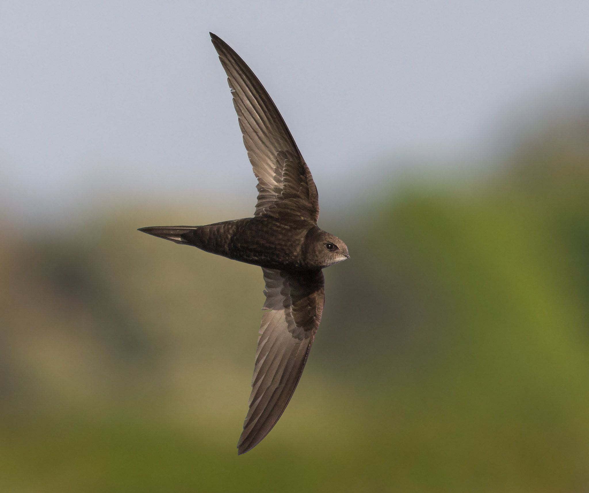
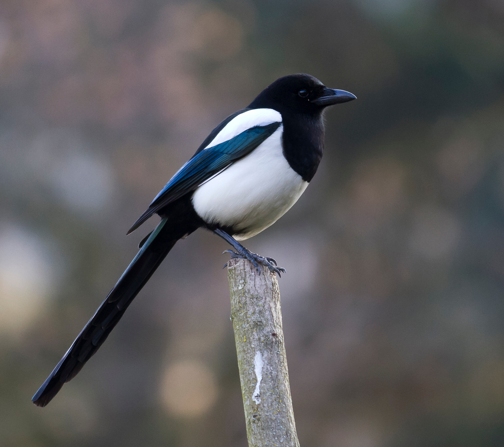
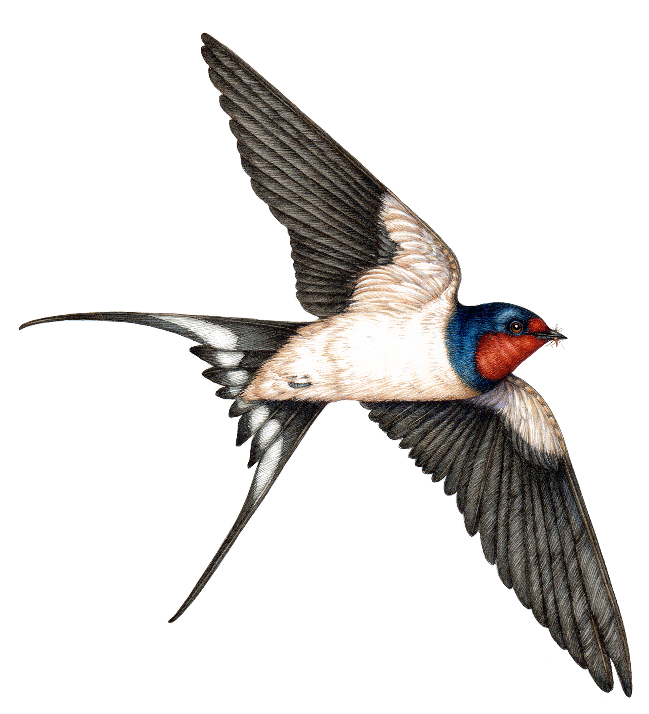

رحيل الألحان: حين تصمت بساتيننا The Departure of Melodies: When Our Orchards Fall Silent

البلبل العراقيThe Iraqi Bulbul
لم يعد البلبل العراقي يغرد كما كان في صباحات بغداد والبصرة؛ يواجه اليوم تهديدات وجودية من تجريف البساتين والصيد الجائر وموجات الجفاف الشديدة... The Iraqi Bulbul no longer sings as it once did in the mornings of Baghdad and Basra; it faces today existential threats from orchard clearing, illegal hunting, and severe droughts...
تعرّف على القصة كاملة ←Learn the Full Story → ⚠️ تهديد مرتفع جداًVery High Threat Level
دخلة البصرةBasra Reed Warbler
تعتبر دخلة البصرة "جوهرة الأهوار" بلا منازع؛ يحتضن العراق ما يقرب من ٩٠٪ من تعدادها العالمي... Known as the 'jewel of the marshes,' Iraq is home to nearly 90% of this species' entire world population...
تعرّف على القصة كاملة ←Learn the Full Story → ⚠️ مهدد بالانقراضEndangered
البط الرخاميMarbled Duck
طائر أنيق بريش منقّط يمنحه تمويهاً مثالياً بالمياه، ترتفع أعداده تهديداً عالمياً بسبب جفاف الأهوار وارتفاع الملوحة... An elegant, mottled-plumage bird whose global threat has risen due to wetland drying and rising salinity...
تعرّف على القصة كاملة ←Learn the Full Story → ⚠️ تهديد مرتفعHigh Threat Level
البط أبيض الرأسWhite-headed Duck
طائر مائي فريد يسهل تمييزه من خلال رأسه الأبيض ومنقاره الأزرق المنتفخ، يعد العراق محطة شتوية حيوية له... A distinctive waterbird recognized by its white head and swollen blue bill; Iraq is a vital wintering station...
تعرّف على القصة كاملة ←Learn the Full Story → ⚠️ حالة حرجة جداًCritically Endangered
الزقزاق الاجتماعيSociable Lapwing
أحد أكثر طيور العالم عرضة للخطر، يعيش بأسراب بسهوب العراق وبواديه المفتوحة، وأكبر تهديداته الصيد الجائر... One of the world's most endangered birds, gathering in flocks across Iraq's open steppes and plains...
تعرّف على القصة كاملة ←Learn the Full Story → ⚠️ حالة حرجة جداًCritically Endangered
أبو منجل الأصلع الشماليNorthern Bald Ibis
طائر أسطوري بتاريخ العراق، كان يعشش قديماً بمنحدرات جبال كردستان، وحالته الآن حرجة جداً وشبه منقرض محلياً... A near-legendary bird once nesting on Kurdistan's mountain cliffs, now critically endangered and locally near-extinct...
تعرّف على القصة كاملة ←Learn the Full Story → ⚠️ مهدد بالانقراضEndangered
النسر المصري (الرخمة)Egyptian Vulture
منظف طبيعي للبيئة، يتواجد بالمنحدرات الجبلية وحول القرى، وأكبر تهديداته التسمم الثانوي من الجيف المعالجة بيطرياً... Nature's own cleaner, found on mountain slopes near villages; its greatest threat is secondary poisoning from treated livestock carcasses...
تعرّف على القصة كاملة ←Learn the Full Story → ⚠️ تهديد منخفض عالمياًLow Global Threat Level
النسر الأسمرGriffon Vulture
رمز من رموز جبال كردستان الشاهقة، يعتمد على الطيران الانزلاقي بأجنحته الضخمة، وتهديده منخفض عالمياً لكنه يواجه ضغوطاً محلية... A symbol of Kurdistan's towering mountains, gliding on massive wings; globally low-risk but under local pressure...
تعرّف على القصة كاملة ←Learn the Full Story → ⚠️ قريب من التهديدNear Threatened
النسر الملتحيBearded Vulture
الأكثر انعزالاً بين النسور، يعيش بأقسى القمم الجبلية الثلجية بكردستان، ويواجه خطر اضطراب أعشاشه الصخرية النادرة... The most isolated of all vultures, living on Kurdistan's harshest snow-capped peaks, facing disturbance of its rare rocky nests...
تعرّف على القصة كاملة ←Learn the Full Story → ⚠️ مهدد بالانقراضEndangered
العقاب الأبقع الأكبرGreater Spotted Eagle
زائر شتوي مهيب للأهوار وضفاف الأنهار الكبرى، ارتفع تصنيفه مؤخراً لمهدد بالانقراض بسبب فقدان محطات الراحة أثناء الهجرة... A majestic winter visitor to Iraq's marshes and major riverbanks, recently uplisted to Endangered due to lost migration stopovers...
تعرّف على القصة كاملة ←Learn the Full Story → ⚠️ قريب من التهديدNear Threatened
البط أحمر العينFerruginous Duck
يختبئ ببحيرات صغيرة ومستنقعات هادئة محاطة بنباتات كثيفة، بلونه الكستنائي المميز، ويحتاج مراقبة مستمرة لضمان بقائه... Hiding in small lakes and calm, reed-fringed marshes, this chestnut-colored duck requires continuous monitoring to ensure its survival...
تعرّف على القصة كاملة ←Learn the Full Story → ⚠️ غير مهدد (LC)Least Concern (LC)
القطا المذنّبPin-tailed Sandgrouse
طائر أرضي مستوطن بسهول العراق الصحراوية الغربية، يعتمد بشدة على مصادر مياه دائمة يقصدها عند الفجر... A ground-dwelling resident of Iraq's western desert plains, relying heavily on permanent water sources visited at dawn...
تعرّف على القصة كاملة ←Learn the Full Story → ⚠️ غير مهدد (LC)Least Concern (LC)
القطا أسود البطنBlack-bellied Sandgrouse
يتميز ببطن أسود واضح أثناء الطيران، مستوطن بهضاب العراق وسهوله شبه الصحراوية، ويُستخدم تقليديًا كدليل على المياه الجوفية... Distinguished by a striking black belly in flight, resident across Iraq's semi-desert plateaus, and traditionally used as an indicator of nearby groundwater...
تعرّف على القصة كاملة ←Learn the Full Story → ⚠️ غير مهدد (LC)Least Concern (LC)
القطا المرقّطSpotted Sandgrouse
الأكثر تكيّفًا مع شح الماء بين أنواع القطا، مستوطن بالكثبان الرملية جنوب غرب العراق، وريشه المرقط يمنحه تمويهًا فائق الكفاءة... The most water-scarcity-adapted sandgrouse species, resident in the sand dunes of southwestern Iraq, with mottled plumage giving it exceptional camouflage...
تعرّف على القصة كاملة ←Learn the Full Story → ⚠️ معرّض للخطر (VU)Vulnerable (VU)
الحُبارىMacQueen's Bustard
طائر السهوب المتوّج ثقافياً وتراثياً، تتناقص أعداده بسبب الصيد الجائر وصيد الصقارة غير المنظم، قد يستحق تصنيف أعلى خطورة قريباً... The culturally revered bird of the steppe, its numbers declining from poaching and unregulated falconry hunting — possibly warranting an even higher threat classification soon...
تعرّف على القصة كاملة ←Learn the Full Story → ⚠️ قريب من التهديد (NT)Near Threatened (NT)
الحُبارى الصغرىLittle Bustard
زائرة عابرة أو شتوية بسهول العراق الزراعية، أصغر وأكثر اكتنازاً من الحبارى الكبرى، تتراجع أعدادها بفقدان الأراضي العشبية التقليدية... A passage or winter visitor to Iraq's agricultural plains, smaller and stockier than MacQueen's Bustard, declining with the loss of traditional grasslands...
تعرّف على القصة كاملة ←Learn the Full Story → ⚠️ غير مهدد (LC)Least Concern (LC)
الحجل الرمليSee-see Partridge
طائر أرضي مكتنز يفضل الجري على الطيران، مستوطن بالتلال الحجرية الجافة شمال وغرب العراق، ودوره غذائي مهم للثعالب والجوارح الصغيرة... A stocky ground bird that prefers running to flying, resident on the dry rocky hills of northern and western Iraq, and an important food source for foxes and small raptors...
تعرّف على القصة كاملة ←Learn the Full Story → ⚠️ غير مهدد (LC)Least Concern (LC).jpg)
الحجل (الشنار)Chukar Partridge
طائر صيد بري معروف بمرتفعات كردستان الصخرية، من أكثر طيور الحجل شيوعاً بالعراق، وله أهمية اقتصادية واجتماعية تقليدية... A well-known game bird of Kurdistan's rocky highlands, among the most common partridge species in Iraq, with traditional economic and social importance...
تعرّف على القصة كاملة ←Learn the Full Story → ⚠️ غير مهدد (LC)Least Concern (LC)
النورس أسود الرأسBlack-headed Gull
من أكثر النوارس انتشاراً بالعالم القديم، زائر شتوي بأعداد كبيرة على دجلة والفرات والأهوار، مؤشر على وفرة الموارد السمكية شتاءً... One of the most widespread gulls in the Old World, a large-scale winter visitor to the Tigris, Euphrates, and marshes — an indicator of winter fish abundance...
تعرّف على القصة كاملة ←Learn the Full Story → ⚠️ غير مهدد (LC)Least Concern (LC)
النورس الأبقعPallas's Gull
ثالث أكبر أنواع النوارس بالعالم، زائر شتوي لأهوار جنوب العراق، ووجوده الموسمي يعكس أهمية الأهوار كمحطة رئيسية بطريق الهجرة الآسيوي-الأفريقي... The third-largest gull species in the world, a winter visitor to southern Iraq's marshes, its seasonal presence reflecting their importance on the Asian-African flyway...
تعرّف على القصة كاملة ←Learn the Full Story → ⚠️ غير مهدد (LC)Least Concern (LC)
الإوز الرماديGreylag Goose
يُعرف الإوز الرمادي علميًا باسم Anser anser، وينتمي إلى فصيلة البطيات (Anatidae) ضمن رتبة الإوزاويات (Anseriformes)، وهو أكبر أنواع الإوز... The Greylag Goose is scientifically known as Anser anser, belonging to the duck family (Anatidae) within the order Anseriformes. It is the largest wild goose species in Eurasia,...
تعرّف على القصة كاملة ←Learn the Full Story → ⚠️ غير مهدد (LC)Least Concern (LC)
الشلندرة الحمراءRuddy Shelduck
تُعرف الشلندرة الحمراء علميًا باسم Tadorna ferruginea، وتنتمي إلى فصيلة البطيات (Anatidae) ضمن رتبة الإوزاويات (Anseriformes)، وهي من البط... The Ruddy Shelduck is scientifically known as Tadorna ferruginea, belonging to the duck family (Anatidae) within the order Anseriformes. It is a relatively large duck,...
تعرّف على القصة كاملة ←Learn the Full Story → ⚠️ غير مهدد (LC)Least Concern (LC)
الشلندرةCommon Shelduck
تُعرف الشلندرة علميًا باسم Tadorna tadorna، وتنتمي إلى فصيلة البطيات (Anatidae) ضمن رتبة الإوزاويات (Anseriformes)، وهي من أكثر أنواع البط... The Common Shelduck is scientifically known as Tadorna tadorna, belonging to the duck family (Anatidae) within the order Anseriformes. It is one of the most distinctively marked...
تعرّف على القصة كاملة ←Learn the Full Story → ⚠️ غير مهدد (LC)Least Concern (LC).webp)
البط الصيفي (الغرغري)Garganey
يُعرف البط الصيفي أو الغرغري علميًا باسم Spatula querquedula، وينتمي إلى فصيلة البطيات (Anatidae) ضمن رتبة الإوزاويات (Anseriformes)، وهو... The Garganey is scientifically known as Spatula querquedula, belonging to the duck family (Anatidae) within the order Anseriformes. It is a small dabbling duck; the male in...
تعرّف على القصة كاملة ←Learn the Full Story → ⚠️ غير مهدد (LC)Least Concern (LC)
البط الرماديGadwall
يُعرف البط الرمادي علميًا باسم Mareca strepera، وينتمي إلى فصيلة البطيات (Anatidae) ضمن رتبة الإوزاويات (Anseriformes)، وهو من البط متوسط... The Gadwall is scientifically known as Mareca strepera, belonging to the duck family (Anatidae) within the order Anseriformes. It is a medium-sized duck with plumage that is...
تعرّف على القصة كاملة ←Learn the Full Story → ⚠️ غير مهدد (LC)Least Concern (LC)
البط الصفارEurasian Wigeon
يُعرف البط الصفار علميًا باسم Mareca penelope، وينتمي إلى فصيلة البطيات (Anatidae) ضمن رتبة الإوزاويات (Anseriformes)، ويتميز الذكر برأس... The Eurasian Wigeon is scientifically known as Mareca penelope, belonging to the duck family (Anatidae) within the order Anseriformes. The male is distinguished by a chestnut-red...
تعرّف على القصة كاملة ←Learn the Full Story → ⚠️ غير مهدد (LC)Least Concern (LC)
البط أخضر الرأسMallard
يُعرف البط أخضر الرأس علميًا باسم Anas platyrhynchos، وينتمي إلى فصيلة البطيات (Anatidae) ضمن رتبة الإوزاويات (Anseriformes)، وهو أشهر... The Mallard is scientifically known as Anas platyrhynchos, belonging to the duck family (Anatidae) within the order Anseriformes. It is the most famous wild duck species and the...
تعرّف على القصة كاملة ←Learn the Full Story → ⚠️ غير مهدد (LC)Least Concern (LC)
البط أسود الذيلNorthern Pintail
يُعرف البط أسود الذيل علميًا باسم Anas acuta، وينتمي إلى فصيلة البطيات (Anatidae) ضمن رتبة الإوزاويات (Anseriformes)، ويتميز الذكر بجسم... The Northern Pintail is scientifically known as Anas acuta, belonging to the duck family (Anatidae) within the order Anseriformes. The male is distinguished by a slender, elegant...
تعرّف على القصة كاملة ←Learn the Full Story → ⚠️ غير مهدد (LC)Least Concern (LC)
البط البحري الصغيرCommon Teal
يُعرف البط البحري الصغير أو البط الصفصاف علميًا باسم Anas crecca، وينتمي إلى فصيلة البطيات (Anatidae) ضمن رتبة الإوزاويات (Anseriformes)،... The Common Teal, also known as the Eurasian Teal, is scientifically known as Anas crecca, belonging to the duck family (Anatidae) within the order Anseriformes. It is the smallest...
تعرّف على القصة كاملة ←Learn the Full Story → ⚠️ غير مهدد (LC)Least Concern (LC)
النحام الكبيرGreater Flamingo
يُعرف النحام الكبير علميًا باسم Phoenicopterus roseus، وينتمي إلى فصيلة النحاميات (Phoenicopteridae) ضمن رتبة النحامياويات... The Greater Flamingo is scientifically known as Phoenicopterus roseus, belonging to the flamingo family (Phoenicopteridae) within the order Phoenicopteriformes. It is a...
تعرّف على القصة كاملة ←Learn the Full Story → ⚠️ غير مهدد (LC)Least Concern (LC)
الغطاس الصغيرLittle Grebe
يُعرف الغطاس الصغير علميًا باسم Tachybaptus ruficollis، وينتمي إلى فصيلة الغطاسيات (Podicipedidae) ضمن رتبة الغطاسياويات... The Little Grebe is scientifically known as Tachybaptus ruficollis, belonging to the grebe family (Podicipedidae) within the order Podicipediformes. It is the smallest grebe...
تعرّف على القصة كاملة ←Learn the Full Story → ⚠️ غير مهدد (LC)Least Concern (LC)
الغطاس المتوّجGreat Crested Grebe
يُعرف الغطاس المتوّج علميًا باسم Podiceps cristatus، وينتمي إلى فصيلة الغطاسيات (Podicipedidae) ضمن رتبة الغطاسياويات (Podicipediformes)،... The Great Crested Grebe is scientifically known as Podiceps cristatus, belonging to the grebe family (Podicipedidae) within the order Podicipediformes. It is the largest and most...
تعرّف على القصة كاملة ←Learn the Full Story → ⚠️ غير مهدد (LC)Least Concern (LC)
حمام الصخرRock Pigeon
يُعرف حمام الصخر علميًا باسم Columba livia، وينتمي إلى فصيلة الحماميات (Columbidae) ضمن رتبة الحماميات (Columbiformes)، وهو الأصل البري... The Rock Pigeon is scientifically known as Columba livia, belonging to the pigeon family (Columbidae) within the order Columbiformes. It is the wild ancestor of all domestic...
تعرّف على القصة كاملة ←Learn the Full Story → ⚠️ معرّض للخطر (VU)Vulnerable (VU)
اليمامة الأوروبيةEuropean Turtle-dove
تُعرف اليمامة الأوروبية علميًا باسم Streptopelia turtur، وتنتمي إلى فصيلة الحماميات (Columbidae) ضمن رتبة الحماميات (Columbiformes)، وهي... The European Turtle-dove is scientifically known as Streptopelia turtur, belonging to the pigeon family (Columbidae) within the order Columbiformes. It is a relatively slender...
تعرّف على القصة كاملة ←Learn the Full Story → ⚠️ غير مهدد (LC)Least Concern (LC)
اليمامة المطوقةEurasian Collared-dove
تُعرف اليمامة المطوقة علميًا باسم Streptopelia decaocto، وتنتمي إلى فصيلة الحماميات (Columbidae) ضمن رتبة الحماميات (Columbiformes)، وتتميز... The Eurasian Collared-dove is scientifically known as Streptopelia decaocto, belonging to the pigeon family (Columbidae) within the order Columbiformes. It is distinguished by...
تعرّف على القصة كاملة ←Learn the Full Story → ⚠️ غير مهدد (LC)Least Concern (LC)
اليمامة الضاحكةLaughing Dove
تُعرف اليمامة الضاحكة علميًا باسم Streptopelia senegalensis (وتُصنَّف حديثًا أحيانًا ضمن الجنس Spilopelia)، وتنتمي إلى فصيلة الحماميات... The Laughing Dove is scientifically known as Streptopelia senegalensis (sometimes recently classified under the genus Spilopelia), belonging to the pigeon family (Columbidae)...
تعرّف على القصة كاملة ←Learn the Full Story → ⚠️ غير مهدد (LC)Least Concern (LC)
مرعة الماءWater Rail
تُعرف مرعة الماء علميًا باسم Rallus aquaticus، وتنتمي إلى فصيلة الغلاليات (Rallidae) ضمن رتبة الغلالياويات (Gruiformes)، وهي طائر خجول ذو... The Water Rail is scientifically known as Rallus aquaticus, belonging to the rail family (Rallidae) within the order Gruiformes. It is a shy bird with a laterally compressed body...
تعرّف على القصة كاملة ←Learn the Full Story → ⚠️ غير مهدد (LC)Least Concern (LC)
مرعة الغيطCorn Crake
تُعرف مرعة الغيط علميًا باسم Crex crex، وتنتمي إلى فصيلة الغلاليات (Rallidae) ضمن رتبة الغلالياويات (Gruiformes)، وهي طائر بري خجول أكثر... The Corn Crake is scientifically known as Crex crex, belonging to the rail family (Rallidae) within the order Gruiformes. It is a shy terrestrial bird more associated with meadows...
تعرّف على القصة كاملة ←Learn the Full Story → ⚠️ غير مهدد (LC)Least Concern (LC)
دجاجة الماءCommon Moorhen
تُعرف دجاجة الماء علميًا باسم Gallinula chloropus، وتنتمي إلى فصيلة الغلاليات (Rallidae) ضمن رتبة الغلالياويات (Gruiformes)، وهي طائر مائي... The Common Moorhen is scientifically known as Gallinula chloropus, belonging to the rail family (Rallidae) within the order Gruiformes. It is a medium-sized waterbird with dark...
تعرّف على القصة كاملة ←Learn the Full Story → ⚠️ غير مهدد (LC)Least Concern (LC)
الغرّةEurasian Coot
تُعرف الغرّة علميًا باسم Fulica atra، وتنتمي إلى فصيلة الغلاليات (Rallidae) ضمن رتبة الغلالياويات (Gruiformes)، وهي طائر مائي مكتنز أسود... The Eurasian Coot is scientifically known as Fulica atra, belonging to the rail family (Rallidae) within the order Gruiformes. It is a stocky waterbird almost entirely black, with...
تعرّف على القصة كاملة ←Learn the Full Story → ⚠️ غير مهدد (LC)Least Concern (LC)
الكركيCommon Crane
يُعرف الكركي علميًا باسم Grus grus، وينتمي إلى فصيلة الكركيات (Gruidae) ضمن رتبة الغلالياويات (Gruiformes)، وهو طائر طويل الساقين والرقبة... The Common Crane is scientifically known as Grus grus, belonging to the crane family (Gruidae) within the order Gruiformes. It is a long-legged, long-necked bird with an elegant...
تعرّف على القصة كاملة ←Learn the Full Story → ⚠️ غير مهدد (LC)Least Concern (LC)
كروان الماءEurasian Stone-curlew
يُعرف كروان الماء أو الكروان الحجري علميًا باسم Burhinus oedicnemus، وينتمي إلى فصيلة الكروانيات (Burhinidae) ضمن رتبة الخوّاضاويات... The Eurasian Stone-curlew is scientifically known as Burhinus oedicnemus, belonging to the thick-knee family (Burhinidae) within the order Charadriiformes. It is a medium-sized...
تعرّف على القصة كاملة ←Learn the Full Story → ⚠️ غير مهدد (LC)Least Concern (LC)
أبو فروخBlack-winged Stilt
يُعرف أبو فروخ علميًا باسم Himantopus himantopus، وينتمي إلى فصيلة أبو فروخيات (Recurvirostridae) ضمن رتبة الخوّاضاويات (Charadriiformes)،... The Black-winged Stilt is scientifically known as Himantopus himantopus, belonging to the stilt family (Recurvirostridae) within the order Charadriiformes. It is a slender wading...
تعرّف على القصة كاملة ←Learn the Full Story → ⚠️ غير مهدد (LC)Least Concern (LC)
النكاتPied Avocet
يُعرف النكات علميًا باسم Recurvirostra avosetta، وينتمي إلى فصيلة أبو فروخيات (Recurvirostridae) ضمن رتبة الخوّاضاويات (Charadriiformes)،... The Pied Avocet is scientifically known as Recurvirostra avosetta, belonging to the stilt family (Recurvirostridae) within the order Charadriiformes. It is an elegant wading bird...
تعرّف على القصة كاملة ←Learn the Full Story → ⚠️ غير مهدد (LC)Least Concern (LC)
زقزاق الشمالNorthern Lapwing
يُعرف زقزاق الشمال علميًا باسم Vanellus vanellus، وينتمي إلى فصيلة الزقزاقيات (Charadriidae) ضمن رتبة الخوّاضاويات (Charadriiformes)، وهو... The Northern Lapwing is scientifically known as Vanellus vanellus, belonging to the plover family (Charadriidae) within the order Charadriiformes. It is a medium-sized wading bird...
تعرّف على القصة كاملة ←Learn the Full Story → ⚠️ غير مهدد (LC)Least Concern (LC)
الزقزاق المهمّزSpur-winged Lapwing
يُعرف الزقزاق المهمّز علميًا باسم Vanellus spinosus، وينتمي إلى فصيلة الزقزاقيات (Charadriidae) ضمن رتبة الخوّاضاويات (Charadriiformes)،... The Spur-winged Lapwing is scientifically known as Vanellus spinosus, belonging to the plover family (Charadriidae) within the order Charadriiformes. It is a distinctive wading...
تعرّف على القصة كاملة ←Learn the Full Story → ⚠️ غير مهدد (LC)Least Concern (LC)
الزقزاق أحمر الوجهRed-wattled Lapwing
يُعرف الزقزاق أحمر الوجه علميًا باسم Vanellus indicus، وينتمي إلى فصيلة الزقزاقيات (Charadriidae) ضمن رتبة الخوّاضاويات (Charadriiformes)،... The Red-wattled Lapwing is scientifically known as Vanellus indicus, belonging to the plover family (Charadriidae) within the order Charadriiformes. It is a striking wading bird...
تعرّف على القصة كاملة ←Learn the Full Story → ⚠️ غير مهدد (LC)Least Concern (LC)
الزقزاق أبيض الذيلWhite-tailed Lapwing
يُعرف الزقزاق أبيض الذيل علميًا باسم Vanellus leucurus، وينتمي إلى فصيلة الزقزاقيات (Charadriidae) ضمن رتبة الخوّاضاويات (Charadriiformes)،... The White-tailed Lapwing is scientifically known as Vanellus leucurus, belonging to the plover family (Charadriidae) within the order Charadriiformes. It is a wading bird with...
تعرّف على القصة كاملة ←Learn the Full Story → ⚠️ غير مهدد (LC)Least Concern (LC)
زقزاق كنتيKentish Plover
يُعرف زقزاق كنتي علميًا باسم Charadrius alexandrinus، وينتمي إلى فصيلة الزقزاقيات (Charadriidae) ضمن رتبة الخوّاضاويات (Charadriiformes)،... The Kentish Plover is scientifically known as Charadrius alexandrinus, belonging to the plover family (Charadriidae) within the order Charadriiformes. It is a small wading bird...
تعرّف على القصة كاملة ←Learn the Full Story → ⚠️ قريب من التهديد (NT)Near Threatened (NT)
الكروان الأوروبيEurasian Curlew
يُعرف الكروان الأوروبي علميًا باسم Numenius arquata، وينتمي إلى فصيلة القطاعيات (Scolopacidae) ضمن رتبة الخوّاضاويات (Charadriiformes)، وهو... The Eurasian Curlew is scientifically known as Numenius arquata, belonging to the sandpiper family (Scolopacidae) within the order Charadriiformes. It is the largest long-billed...
تعرّف على القصة كاملة ←Learn the Full Story → ⚠️ قريب من التهديد (NT)Near Threatened (NT)
اللقلق أسود الذيلBlack-tailed Godwit
يُعرف هذا الطائر علميًا باسم Limosa limosa (المعروف أيضًا بالفردة سوداء الذيل)، وينتمي إلى فصيلة القطاعيات (Scolopacidae) ضمن رتبة... This bird is scientifically known as Limosa limosa (also known as the Black-tailed Godwit), belonging to the sandpiper family (Scolopacidae) within the order Charadriiformes. It...
تعرّف على القصة كاملة ←Learn the Full Story → ⚠️ غير مهدد (LC)Least Concern (LC)
البكاسينCommon Snipe
يُعرف البكاسين علميًا باسم Gallinago gallinago، وينتمي إلى فصيلة القطاعيات (Scolopacidae) ضمن رتبة الخوّاضاويات (Charadriiformes)، وهو طائر... The Common Snipe is scientifically known as Gallinago gallinago, belonging to the sandpiper family (Scolopacidae) within the order Charadriiformes. It is a medium-sized wading...
تعرّف على القصة كاملة ←Learn the Full Story → ⚠️ غير مهدد (LC)Least Concern (LC)
أحمر الساقCommon Redshank
يُعرف أحمر الساق علميًا باسم Tringa totanus، وينتمي إلى فصيلة القطاعيات (Scolopacidae) ضمن رتبة الخوّاضاويات (Charadriiformes)، وهو طائر... The Common Redshank is scientifically known as Tringa totanus, belonging to the sandpiper family (Scolopacidae) within the order Charadriiformes. It is a medium-sized wading bird...
تعرّف على القصة كاملة ←Learn the Full Story → ⚠️ غير مهدد (LC)Least Concern (LC)
أخضر الساقCommon Greenshank
يُعرف أخضر الساق علميًا باسم Tringa nebularia، وينتمي إلى فصيلة القطاعيات (Scolopacidae) ضمن رتبة الخوّاضاويات (Charadriiformes)، وهو طائر... The Common Greenshank is scientifically known as Tringa nebularia, belonging to the sandpiper family (Scolopacidae) within the order Charadriiformes. It is a medium-to-large...
تعرّف على القصة كاملة ←Learn the Full Story → ⚠️ غير مهدد (LC)Least Concern (LC)
طيطوي الغيطWood Sandpiper
يُعرف طيطوي الغيط علميًا باسم Tringa glareola، وينتمي إلى فصيلة القطاعيات (Scolopacidae) ضمن رتبة الخوّاضاويات (Charadriiformes)، وهو طائر... The Wood Sandpiper is scientifically known as Tringa glareola, belonging to the sandpiper family (Scolopacidae) within the order Charadriiformes. It is a small-to-medium wading...
تعرّف على القصة كاملة ←Learn the Full Story → ⚠️ غير مهدد (LC)Least Concern (LC)
النورس رفيع المنقارSlender-billed Gull
يُعرف النورس رفيع المنقار علميًا باسم Chroicocephalus genei، وينتمي إلى فصيلة النورسيات (Laridae) ضمن رتبة الخوّاضاويات (Charadriiformes)،... The Slender-billed Gull is scientifically known as Chroicocephalus genei, belonging to the gull family (Laridae) within the order Charadriiformes. It is a medium-sized gull with...
تعرّف على القصة كاملة ←Learn the Full Story → ⚠️ غير مهدد (LC)Least Concern (LC)
خطاف البحر عريض المنقارGull-billed Tern
يُعرف خطاف البحر عريض المنقار علميًا باسم Gelochelidon nilotica، وينتمي إلى فصيلة النورسيات (Laridae) ضمن رتبة الخوّاضاويات... The Gull-billed Tern is scientifically known as Gelochelidon nilotica, belonging to the gull family (Laridae) within the order Charadriiformes. It is one of the most distinctive...
تعرّف على القصة كاملة ←Learn the Full Story → ⚠️ غير مهدد (LC)Least Concern (LC)
خطاف البحر القزوينيCaspian Tern
يُعرف خطاف البحر القزويني علميًا باسم Hydroprogne caspia، وينتمي إلى فصيلة النورسيات (Laridae) ضمن رتبة الخوّاضاويات (Charadriiformes)، وهو... The Caspian Tern is scientifically known as Hydroprogne caspia, belonging to the gull family (Laridae) within the order Charadriiformes. It is the largest tern species in the...
تعرّف على القصة كاملة ←Learn the Full Story → ⚠️ غير مهدد (LC)Least Concern (LC)
خطاف البحر المشاربWhiskered Tern
يُعرف خطاف البحر المشارب علميًا باسم Chlidonias hybrida، وينتمي إلى فصيلة النورسيات (Laridae) ضمن رتبة الخوّاضاويات (Charadriiformes)، وهو... The Whiskered Tern is scientifically known as Chlidonias hybrida, belonging to the gull family (Laridae) within the order Charadriiformes. It is smaller and lighter than the...
تعرّف على القصة كاملة ←Learn the Full Story → ⚠️ غير مهدد (LC)Least Concern (LC)
الوقّاق الكبيرGreat Bittern
يُعرف الوقّاق الكبير علميًا باسم Botaurus stellaris، وينتمي إلى فصيلة البلشونيات (Ardeidae) ضمن رتبة البلشوناويات (Pelecaniformes)، وهو... The Great Bittern is scientifically known as Botaurus stellaris, belonging to the heron family (Ardeidae) within the order Pelecaniformes. It is a very shy bird, rarely observed,...
تعرّف على القصة كاملة ←Learn the Full Story → ⚠️ غير مهدد (LC)Least Concern (LC)
الوقّاق الصغيرLittle Bittern
يُعرف الوقّاق الصغير علميًا باسم Ixobrychus minutus، وينتمي إلى فصيلة البلشونيات (Ardeidae) ضمن رتبة البلشوناويات (Pelecaniformes)، وهو... The Little Bittern is scientifically known as Ixobrychus minutus, belonging to the heron family (Ardeidae) within the order Pelecaniformes. It is the smallest member of the heron...
تعرّف على القصة كاملة ←Learn the Full Story → ⚠️ غير مهدد (LC)Least Concern (LC)
مالك الحزين الرماديGrey Heron
يُعرف مالك الحزين الرمادي علميًا باسم Ardea cinerea، وينتمي إلى فصيلة البلشونيات (Ardeidae) ضمن رتبة البلشوناويات (Pelecaniformes)، وهو من... The Grey Heron is scientifically known as Ardea cinerea, belonging to the heron family (Ardeidae) within the order Pelecaniformes. It is among the largest and most common herons,...
تعرّف على القصة كاملة ←Learn the Full Story → ⚠️ غير مهدد (LC)Least Concern (LC)
مالك الحزين الأرجوانيPurple Heron
يُعرف مالك الحزين الأرجواني علميًا باسم Ardea purpurea، وينتمي إلى فصيلة البلشونيات (Ardeidae) ضمن رتبة البلشوناويات (Pelecaniformes)، وهو... The Purple Heron is scientifically known as Ardea purpurea, belonging to the heron family (Ardeidae) within the order Pelecaniformes. It is more slender and streamlined than the...
تعرّف على القصة كاملة ←Learn the Full Story → ⚠️ غير مهدد (LC)Least Concern (LC)
البلشون الأبيض الكبيرGreat Egret
يُعرف البلشون الأبيض الكبير علميًا باسم Ardea alba، وينتمي إلى فصيلة البلشونيات (Ardeidae) ضمن رتبة البلشوناويات (Pelecaniformes)، وهو أكبر... The Great Egret is scientifically known as Ardea alba, belonging to the heron family (Ardeidae) within the order Pelecaniformes. It is the largest white egret species in the...
تعرّف على القصة كاملة ←Learn the Full Story → ⚠️ غير مهدد (LC)Least Concern (LC)
أبو قردانCattle Egret
يُعرف أبو قردان علميًا باسم Bubulcus ibis، وينتمي إلى فصيلة البلشونيات (Ardeidae) ضمن رتبة البلشوناويات (Pelecaniformes)، وهو أصغر وأكثف من... The Cattle Egret is scientifically known as Bubulcus ibis, belonging to the heron family (Ardeidae) within the order Pelecaniformes. It is smaller and stockier than other white...
تعرّف على القصة كاملة ←Learn the Full Story → ⚠️ غير مهدد (LC)Least Concern (LC)
البلشون الصدئيSquacco Heron
يُعرف البلشون الصدئي علميًا باسم Ardeola ralloides، وينتمي إلى فصيلة البلشونيات (Ardeidae) ضمن رتبة البلشوناويات (Pelecaniformes)، وهو... The Squacco Heron is scientifically known as Ardeola ralloides, belonging to the heron family (Ardeidae) within the order Pelecaniformes. It is a small, stocky heron with creamy...
تعرّف على القصة كاملة ←Learn the Full Story → ⚠️ غير مهدد (LC)Least Concern (LC)
البلشون الليليBlack-crowned Night-heron
يُعرف البلشون الليلي علميًا باسم Nycticorax nycticorax، وينتمي إلى فصيلة البلشونيات (Ardeidae) ضمن رتبة البلشوناويات (Pelecaniformes)، وهو... The Black-crowned Night-heron is scientifically known as Nycticorax nycticorax, belonging to the heron family (Ardeidae) within the order Pelecaniformes. It is a stocky heron with...
تعرّف على القصة كاملة ←Learn the Full Story → ⚠️ غير مهدد (LC)Least Concern (LC)
أبو منجل الأسودGlossy Ibis
يُعرف أبو منجل الأسود علميًا باسم Plegadis falcinellus، وينتمي إلى فصيلة أبو منجليات (Threskiornithidae) ضمن رتبة البلشوناويات... The Glossy Ibis is scientifically known as Plegadis falcinellus, belonging to the ibis family (Threskiornithidae) within the order Pelecaniformes. It is a bird with dark...
تعرّف على القصة كاملة ←Learn the Full Story → ⚠️ غير مهدد (LC)Least Concern (LC)
العقاب الصيادOsprey
يُعرف العقاب الصياد علميًا باسم Pandion haliaetus، وينتمي إلى فصيلة العقابيات الصيادة (Pandionidae) ضمن رتبة الصقرياويات (Accipitriformes)،... The Osprey is scientifically known as Pandion haliaetus, belonging to the osprey family (Pandionidae) within the order Accipitriformes. It is a raptor almost entirely specialized...
تعرّف على القصة كاملة ←Learn the Full Story → ⚠️ غير مهدد (LC)Least Concern (LC)
عقاب الحيّاتShort-toed Snake-eagle
يُعرف عقاب الحيّات علميًا باسم Circaetus gallicus، وينتمي إلى فصيلة الصقرياويات (Accipitridae) ضمن رتبة الصقرياويات (Accipitriformes)، وهو... The Short-toed Snake-eagle is scientifically known as Circaetus gallicus, belonging to the hawk family (Accipitridae) within the order Accipitriformes. It is a large raptor with a...
تعرّف على القصة كاملة ←Learn the Full Story → ⚠️ غير مهدد (LC)Least Concern (LC)
العقاب المسربلBooted Eagle
يُعرف العقاب المسربل علميًا باسم Hieraaetus pennatus، وينتمي إلى فصيلة الصقرياويات (Accipitridae) ضمن رتبة الصقرياويات (Accipitriformes)،... The Booted Eagle is scientifically known as Hieraaetus pennatus, belonging to the hawk family (Accipitridae) within the order Accipitriformes. It is among the smallest eagle...
تعرّف على القصة كاملة ←Learn the Full Story → ⚠️ مهدد بالانقراض (EN)Endangered (EN)
عقاب السهوبSteppe Eagle
يُعرف عقاب السهوب علميًا باسم Aquila nipalensis، وينتمي إلى فصيلة الصقرياويات (Accipitridae) ضمن رتبة الصقرياويات (Accipitriformes)، وهو... The Steppe Eagle is scientifically known as Aquila nipalensis, belonging to the hawk family (Accipitridae) within the order Accipitriformes. It is a large eagle with nearly...
تعرّف على القصة كاملة ←Learn the Full Story → ⚠️ معرّض للخطر (VU)Vulnerable (VU)
العقاب الإمبراطوريEastern Imperial Eagle
يُعرف العقاب الإمبراطوري علميًا باسم Aquila heliaca، وينتمي إلى فصيلة الصقرياويات (Accipitridae) ضمن رتبة الصقرياويات (Accipitriformes)،... The Eastern Imperial Eagle is scientifically known as Aquila heliaca, belonging to the hawk family (Accipitridae) within the order Accipitriformes. It is a large, majestic eagle...
تعرّف على القصة كاملة ←Learn the Full Story → ⚠️ غير مهدد (LC)Least Concern (LC)
العقاب الذهبيGolden Eagle
يُعرف العقاب الذهبي علميًا باسم Aquila chrysaetos، وينتمي إلى فصيلة الصقرياويات (Accipitridae) ضمن رتبة الصقرياويات (Accipitriformes)، وهو... The Golden Eagle is scientifically known as Aquila chrysaetos, belonging to the hawk family (Accipitridae) within the order Accipitriformes. It is among the largest and most...
تعرّف على القصة كاملة ←Learn the Full Story → ⚠️ غير مهدد (LC)Least Concern (LC)
مرزة المستنقعاتWestern Marsh Harrier
تُعرف مرزة المستنقعات علميًا باسم Circus aeruginosus، وتنتمي إلى فصيلة الصقرياويات (Accipitridae) ضمن رتبة الصقرياويات (Accipitriformes)،... The Western Marsh Harrier is scientifically known as Circus aeruginosus, belonging to the hawk family (Accipitridae) within the order Accipitriformes. It is the largest harrier...
تعرّف على القصة كاملة ←Learn the Full Story → ⚠️ قريب من التهديد (NT)Near Threatened (NT)
المرزة الشاحبةPallid Harrier
تُعرف المرزة الشاحبة علميًا باسم Circus macrourus، وتنتمي إلى فصيلة الصقرياويات (Accipitridae) ضمن رتبة الصقرياويات (Accipitriformes)، وهي... The Pallid Harrier is scientifically known as Circus macrourus, belonging to the hawk family (Accipitridae) within the order Accipitriformes. It is more slender and lighter than...
تعرّف على القصة كاملة ←Learn the Full Story → ⚠️ غير مهدد (LC)Least Concern (LC)
الحدأة السوداءBlack Kite
تُعرف الحدأة السوداء علميًا باسم Milvus migrans، وتنتمي إلى فصيلة الصقرياويات (Accipitridae) ضمن رتبة الصقرياويات (Accipitriformes)، وهي... The Black Kite is scientifically known as Milvus migrans, belonging to the hawk family (Accipitridae) within the order Accipitriformes. It is a medium-sized raptor with nearly...
تعرّف على القصة كاملة ←Learn the Full Story → ⚠️ غير مهدد (LC)Least Concern (LC)
الصقر طويل الساقLong-legged Buzzard
يُعرف الصقر طويل الساق علميًا باسم Buteo rufinus، وينتمي إلى فصيلة الصقرياويات (Accipitridae) ضمن رتبة الصقرياويات (Accipitriformes)، وهو... The Long-legged Buzzard is scientifically known as Buteo rufinus, belonging to the hawk family (Accipitridae) within the order Accipitriformes. It is a relatively large raptor...
تعرّف على القصة كاملة ←Learn the Full Story → ⚠️ غير مهدد (LC)Least Concern (LC)
البومة الشراقيةWestern Barn Owl
تُعرف البومة الشراقية علميًا باسم Tyto alba، وتنتمي إلى فصيلة البوميات الشراقية (Tytonidae) ضمن رتبة البومياويات (Strigiformes)، وهي بومة... The Western Barn Owl is scientifically known as Tyto alba, belonging to the barn owl family (Tytonidae) within the order Strigiformes. It is a medium-sized owl distinguished by...
تعرّف على القصة كاملة ←Learn the Full Story → ⚠️ غير مهدد (LC)Least Concern (LC)
بومة الأدغالEurasian Scops-owl
تُعرف بومة الأدغال علميًا باسم Otus scops، وتنتمي إلى فصيلة البوميات الحقيقية (Strigidae) ضمن رتبة البومياويات (Strigiformes)، وهي من أصغر... The Eurasian Scops-owl is scientifically known as Otus scops, belonging to the true owl family (Strigidae) within the order Strigiformes. It is among the smallest owl species,...
تعرّف على القصة كاملة ←Learn the Full Story → ⚠️ غير مهدد (LC)Least Concern (LC)
أم قويقEurasian Eagle-owl
تُعرف أم قويق علميًا باسم Bubo bubo، وتنتمي إلى فصيلة البوميات الحقيقية (Strigidae) ضمن رتبة البومياويات (Strigiformes)، وهي من أضخم أنواع... The Eurasian Eagle-owl is scientifically known as Bubo bubo, belonging to the true owl family (Strigidae) within the order Strigiformes. It is among the largest owl species in the...
تعرّف على القصة كاملة ←Learn the Full Story → ⚠️ غير مهدد (LC)Least Concern (LC)
بومة اللوندLittle Owl
تُعرف بومة اللوند علميًا باسم Athene noctua، وتنتمي إلى فصيلة البوميات الحقيقية (Strigidae) ضمن رتبة البومياويات (Strigiformes)، وهي بومة... The Little Owl is scientifically known as Athene noctua, belonging to the true owl family (Strigidae) within the order Strigiformes. It is a small, stocky owl without prominent...
تعرّف على القصة كاملة ←Learn the Full Story → ⚠️ غير مهدد (LC)Least Concern (LC)
بومة قصيرة الأذنShort-eared Owl
تُعرف بومة قصيرة الأذن علميًا باسم Asio flammeus، وتنتمي إلى فصيلة البوميات الحقيقية (Strigidae) ضمن رتبة البومياويات (Strigiformes)، وهي... The Short-eared Owl is scientifically known as Asio flammeus, belonging to the true owl family (Strigidae) within the order Strigiformes. It is a medium-sized owl with very short,...
تعرّف على القصة كاملة ←Learn the Full Story → ⚠️ غير مهدد (LC)Least Concern (LC)
الهدهدEurasian Hoopoe
يُعرف الهدهد علميًا باسم Upupa epops، وينتمي إلى فصيلة الهداهيديات (Upupidae) ضمن رتبة الهداهيدياويات (Bucerotiformes)، وهو طائر فريد الشكل... The Eurasian Hoopoe is scientifically known as Upupa epops, belonging to the hoopoe family (Upupidae) within the order Bucerotiformes. It is a uniquely shaped bird with...
تعرّف على القصة كاملة ←Learn the Full Story → ⚠️ غير مهدد (LC)Least Concern (LC)
الرفرافCommon Kingfisher
يُعرف الرفراف علميًا باسم Alcedo atthis، وينتمي إلى فصيلة الرفرافيات (Alcedinidae) ضمن رتبة الرفرافاويات (Coraciiformes)، وهو طائر صغير... The Common Kingfisher is scientifically known as Alcedo atthis, belonging to the kingfisher family (Alcedinidae) within the order Coraciiformes. It is a small, vividly colored...
تعرّف على القصة كاملة ←Learn the Full Story → ⚠️ غير مهدد (LC)Least Concern (LC)
الرفراف أبيض الصدرWhite-throated Kingfisher
يُعرف الرفراف أبيض الصدر علميًا باسم Halcyon smyrnensis، وينتمي إلى فصيلة الرفرافيات (Alcedinidae) ضمن رتبة الرفرافاويات (Coraciiformes)،... The White-throated Kingfisher is scientifically known as Halcyon smyrnensis, belonging to the kingfisher family (Alcedinidae) within the order Coraciiformes. It is larger and more...
تعرّف على القصة كاملة ←Learn the Full Story → ⚠️ غير مهدد (LC)Least Concern (LC)
الوروار أزرق الخدBlue-cheeked Bee-eater
يُعرف الوروار أزرق الخد علميًا باسم Merops persicus، وينتمي إلى فصيلة الورواريات (Meropidae) ضمن رتبة الرفرافاويات (Coraciiformes)، وهو... The Blue-cheeked Bee-eater is scientifically known as Merops persicus, belonging to the bee-eater family (Meropidae) within the order Coraciiformes. It is a slender, vividly...
تعرّف على القصة كاملة ←Learn the Full Story → ⚠️ غير مهدد (LC)Least Concern (LC)
الوروار الأوروبيEuropean Bee-eater
يُعرف الوروار الأوروبي علميًا باسم Merops apiaster، وينتمي إلى فصيلة الورواريات (Meropidae) ضمن رتبة الرفرافاويات (Coraciiformes)، وهو من... The European Bee-eater is scientifically known as Merops apiaster, belonging to the bee-eater family (Meropidae) within the order Coraciiformes. It is among the most colorful...
تعرّف على القصة كاملة ←Learn the Full Story → ⚠️ غير مهدد (LC)Least Concern (LC)
الشرقرق الأوروبيEuropean Roller
يُعرف الشرقرق الأوروبي علميًا باسم Coracias garrulus، وينتمي إلى فصيلة الشرقرقيات (Coraciidae) ضمن رتبة الرفرافاويات (Coraciiformes)، وهو... The European Roller is scientifically known as Coracias garrulus, belonging to the roller family (Coraciidae) within the order Coraciiformes. It is a stocky, vividly colored bird...
تعرّف على القصة كاملة ←Learn the Full Story → ⚠️ غير مهدد (LC)Least Concern (LC)
الوقواق المرقّطGreat Spotted Cuckoo
يُعرف الوقواق المرقّط علميًا باسم Clamator glandarius، وينتمي إلى فصيلة الوقواقيات (Cuculidae) ضمن رتبة الوقواقاويات (Cuculiformes)، وهو... The Great Spotted Cuckoo is scientifically known as Clamator glandarius, belonging to the cuckoo family (Cuculidae) within the order Cuculiformes. It is larger and more...
تعرّف على القصة كاملة ←Learn the Full Story → ⚠️ غير مهدد (LC)Least Concern (LC)
الوقواقCommon Cuckoo
يُعرف الوقواق علميًا باسم Cuculus canorus، وينتمي إلى فصيلة الوقواقيات (Cuculidae) ضمن رتبة الوقواقاويات (Cuculiformes)، وهو طائر نحيل ذو... The Common Cuckoo is scientifically known as Cuculus canorus, belonging to the cuckoo family (Cuculidae) within the order Cuculiformes. It is a slender bird with gray plumage on...
تعرّف على القصة كاملة ←Learn the Full Story → ⚠️ غير مهدد (LC)Least Concern (LC)
السمامةCommon Swift
تُعرف السمامة علميًا باسم Apus apus، وتنتمي إلى فصيلة السماميات (Apodidae) ضمن رتبة السماميات (Apodiformes)، وهي طائر انسيابي بالكامل... The Common Swift is scientifically known as Apus apus, belonging to the swift family (Apodidae) within the order Apodiformes. It is an almost entirely streamlined bird adapted for...
تعرّف على القصة كاملة ←Learn the Full Story → ⚠️ غير مهدد (LC)Least Concern (LC)
الباشق الصغيرLesser Kestrel
يُعرف الباشق الصغير علميًا باسم Falco naumanni، وينتمي إلى فصيلة الصقريات (Falconidae) ضمن رتبة الصقرياويات (Falconiformes)، وهو أصغر وأرشق... The Lesser Kestrel is scientifically known as Falco naumanni, belonging to the falcon family (Falconidae) within the order Falconiformes. It is smaller and more slender than the...
تعرّف على القصة كاملة ←Learn the Full Story → ⚠️ غير مهدد (LC)Least Concern (LC)
الباشقCommon Kestrel
يُعرف الباشق علميًا باسم Falco tinnunculus، وينتمي إلى فصيلة الصقريات (Falconidae) ضمن رتبة الصقرياويات (Falconiformes)، وهو من أكثر الصقور... The Common Kestrel is scientifically known as Falco tinnunculus, belonging to the falcon family (Falconidae) within the order Falconiformes. It is among the most common small...
تعرّف على القصة كاملة ←Learn the Full Story → ⚠️ غير مهدد (LC)Least Concern (LC)
شاهين الحمامEurasian Hobby
يُعرف شاهين الحمام علميًا باسم Falco subbuteo، وينتمي إلى فصيلة الصقريات (Falconidae) ضمن رتبة الصقرياويات (Falconiformes)، وهو صقر نحيل... The Eurasian Hobby is scientifically known as Falco subbuteo, belonging to the falcon family (Falconidae) within the order Falconiformes. It is a slender, fast-flying falcon...
تعرّف على القصة كاملة ←Learn the Full Story → ⚠️ غير مهدد (LC)Least Concern (LC)
الصفير الذهبيEurasian Golden Oriole
يُعرف الصفير الذهبي علميًا باسم Oriolus oriolus، وينتمي إلى فصيلة الصفيريات (Oriolidae) ضمن رتبة العصفوريات (Passeriformes)، ويتميز الذكر... The Eurasian Golden Oriole is scientifically known as Oriolus oriolus, belonging to the oriole family (Oriolidae) within the order Passeriformes. The male is distinguished by...
تعرّف على القصة كاملة ←Learn the Full Story → ⚠️ غير مهدد (LC)Least Concern (LC)
القيقEurasian Jay
يُعرف القيق علميًا باسم Garrulus glandarius، وينتمي إلى فصيلة الغرابيات (Corvidae) ضمن رتبة العصفوريات (Passeriformes)، وهو من أكثر الغربان... The Eurasian Jay is scientifically known as Garrulus glandarius, belonging to the crow family (Corvidae) within the order Passeriformes. It is among the most colorful of the crow...
تعرّف على القصة كاملة ←Learn the Full Story → ⚠️ غير مهدد (LC)Least Concern (LC)
العقعقEurasian Magpie
يُعرف العقعق علميًا باسم Pica pica، وينتمي إلى فصيلة الغرابيات (Corvidae) ضمن رتبة العصفوريات (Passeriformes)، وهو طائر متباين اللون بشدة... The Eurasian Magpie is scientifically known as Pica pica, belonging to the crow family (Corvidae) within the order Passeriformes. It is a strongly contrasting bird with clearly...
تعرّف على القصة كاملة ←Learn the Full Story → ⚠️ غير مهدد (LC)Least Concern (LC)
الغراب الرماديHooded Crow
يُعرف الغراب الرمادي علميًا باسم Corvus cornix، وينتمي إلى فصيلة الغرابيات (Corvidae) ضمن رتبة العصفوريات (Passeriformes)، ويتميز بريش أسود... The Hooded Crow is scientifically known as Corvus cornix, belonging to the crow family (Corvidae) within the order Passeriformes. It is distinguished by black plumage on the head,...
تعرّف على القصة كاملة ←Learn the Full Story → ⚠️ غير مهدد (LC)Least Concern (LC)
الغراب الأسود الكبيرCommon Raven
يُعرف الغراب الأسود الكبير علميًا باسم Corvus corax، وينتمي إلى فصيلة الغرابيات (Corvidae) ضمن رتبة العصفوريات (Passeriformes)، وهو أكبر... The Common Raven is scientifically known as Corvus corax, belonging to the crow family (Corvidae) within the order Passeriformes. It is the largest passerine species in the world,...
تعرّف على القصة كاملة ←Learn the Full Story → ⚠️ غير مهدد (LC)Least Concern (LC)
القنبرة المتوجةCrested Lark
تُعرف القنبرة المتوجة علميًا باسم Galerida cristata، وتنتمي إلى فصيلة القنبريات (Alaudidae) ضمن رتبة العصفوريات (Passeriformes)، وهي طائر... The Crested Lark is scientifically known as Galerida cristata, belonging to the lark family (Alaudidae) within the order Passeriformes. It is a small ground bird with camouflaged...
تعرّف على القصة كاملة ←Learn the Full Story → ⚠️ غير مهدد (LC)Least Concern (LC)
السنونوBarn Swallow
يُعرف السنونو علميًا باسم Hirundo rustica، وينتمي إلى فصيلة السنونيات (Hirundinidae) ضمن رتبة العصفوريات (Passeriformes)، وهو طائر رشيق... The Barn Swallow is scientifically known as Hirundo rustica, belonging to the swallow family (Hirundinidae) within the order Passeriformes. It is a slender, fast-flying bird with...
تعرّف على القصة كاملة ←Learn the Full Story → ⚠️ غير مهدد (LC)Least Concern (LC)
السنونو المنزليCommon House-martin
يُعرف السنونو المنزلي علميًا باسم Delichon urbicum، وينتمي إلى فصيلة السنونيات (Hirundinidae) ضمن رتبة العصفوريات (Passeriformes)، وهو أكثر... The Common House-martin is scientifically known as Delichon urbicum, belonging to the swallow family (Hirundinidae) within the order Passeriformes. It is stockier than the Barn...
تعرّف على القصة كاملة ←Learn the Full Story →